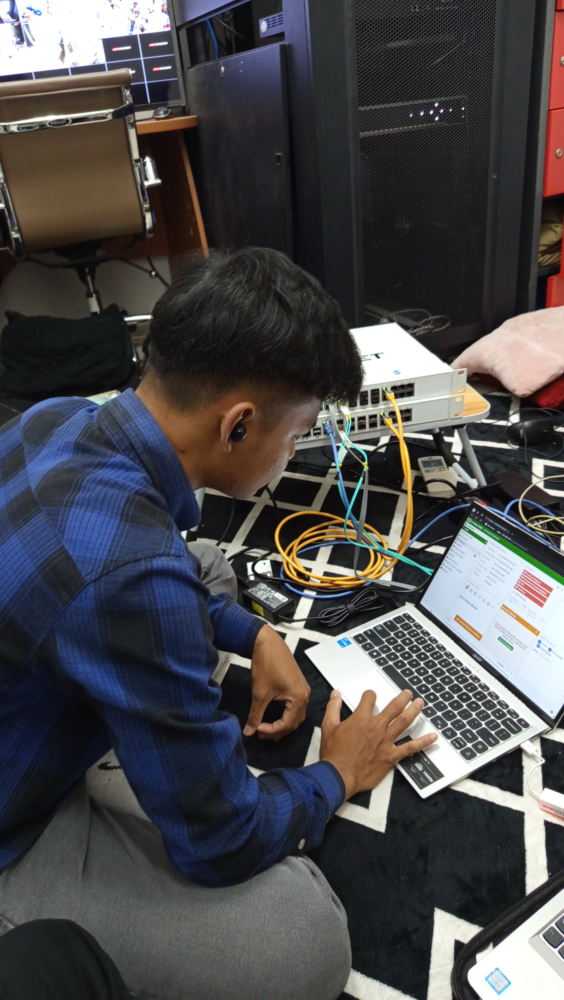
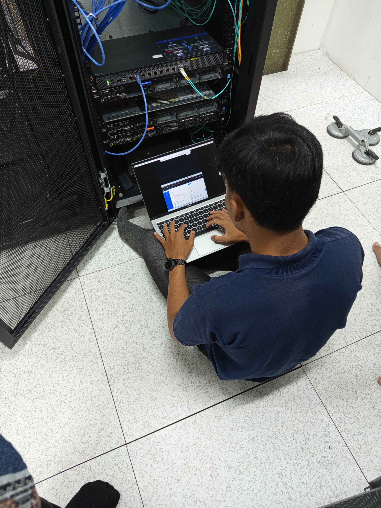
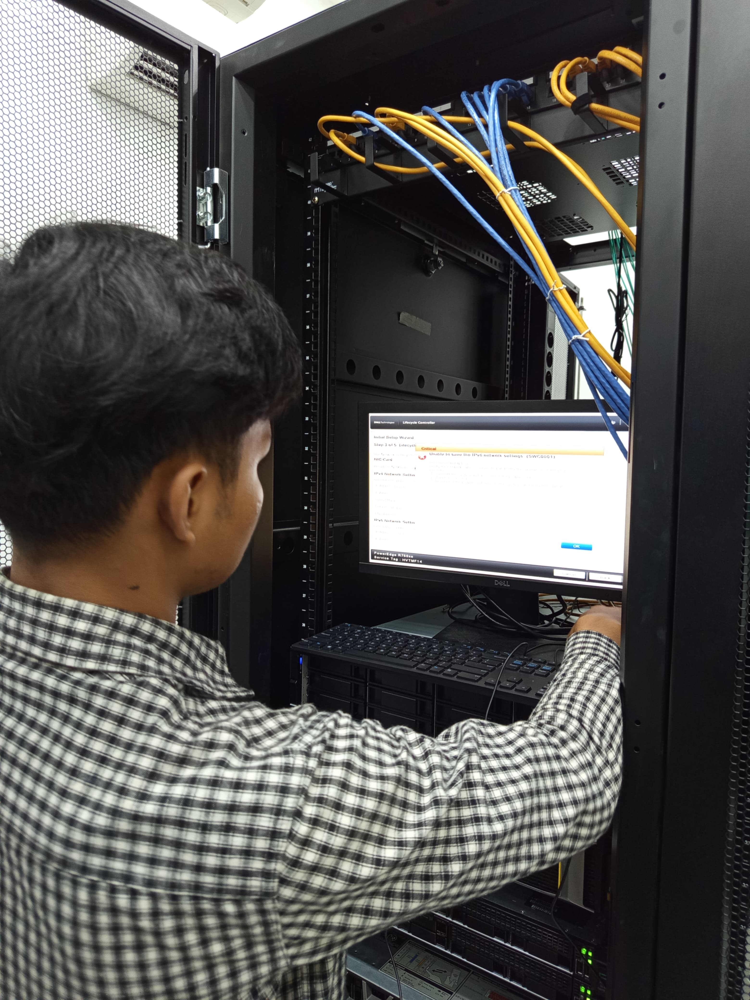

M Ariz Taupiqur R
Network Engineer & Teknik Informatika
Tentang Saya
Saya adalah seorang Network Engineer pemula yang tertarik pada dunia Networking. Saat ini saya sedang memperdalam pengetahuan tentang Networking dan Cyber Security.
Dengan latar belakang pendidikan Teknik Komputer dan Jaringan, saya memiliki dasar yang kuat dalam konfigurasi jaringan serta memahami konsep dasar bagaimana jaringan bekerja.
Pengalaman Kerja
| Jabatan | Penempatan | Tahun |
|---|---|---|
| Magang IT Support | Universitas Bina Nusantara | 2023 |
| Network Engineer Support | Sutech | 2024 - Sekarang |
Riwayat Pendidikan
| Tingkat | Institusi | Tahun |
|---|---|---|
| SMK | SMKN 1 Gunungguruh | 2021 - 2024 |
| S1 - Teknik Informatika | Universitas Siber Asia | 2025 - Sekarang |
Galeri
  Keahlian
- Networking Protocols,TCP/IP, DNS, DHCP, HTTP/HTTPS, FTP, SSH, VLAN, OSPF, BGP, STP, SNMP
- Network Devices,Cisco Routers & Switches, Ruijie Firewalls, Load Balancer, Wireless Access Points
- Microsoft Office
Aktivitas Terkini
- Bekerja sebagai NOC disuatu perusahaan
- Memperdalam skill Networking
- Projek deployment Networking area